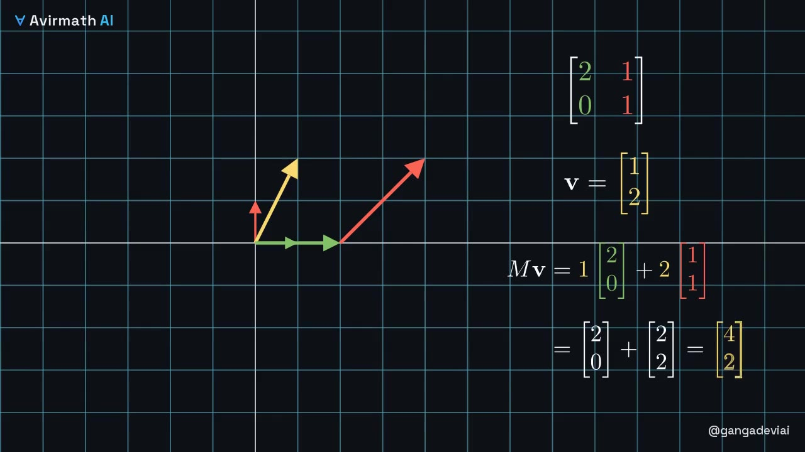
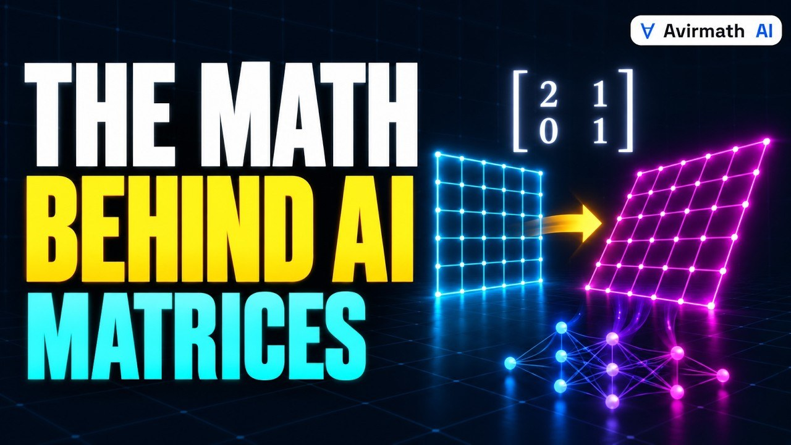
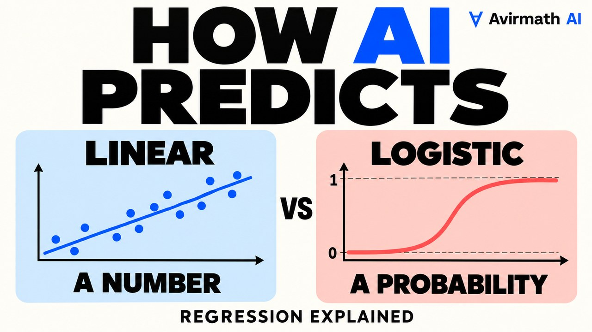

Lessons
One concept at a time, in the order the mathematics was discovered. Each lesson is a video, a worked derivation, a live experiment and an assessment.

What Is Gradient Descent?
When no formula gives the answer, measure your error, find the direction in which it grows fastest, and step the opposite way; repeat. That procedure, from 1847, trains nearly every neural network today.

What Is Backpropagation?
Backpropagation is the chain rule organised so that one backward sweep gives the derivative of the error with respect to every weight at once — the gradient that gradient descent needs.

What Is a Vector, and What Is the Dot Product?
A vector is a list of numbers that is also an arrow, and the dot product is the one number that says how much two arrows agree. Every neuron, every embedding lookup and every attention score is a dot product.

Matrices in AI: The Linear Algebra Inside Every Neural Network Layer, Attention Head and Recommender
Every layer of a neural network is a matrix, and a matrix is a machine that moves all of space at once: its columns say where the basis arrows land, multiplying matrices is doing one move after another, the determinant is how much area the move scales, and eigenvectors are the directions it only stretches. Attention, images, web ranking, recommendation and cheap fine-tuning are all the same machine at scale.

Softmax and Cross-Entropy in Machine Learning: Multi-Class Diagnosis on Real Patient Data, Lung-Cancer Screening and Language Models
When the answer is one of several classes, softmax turns a score per class into a probability per class and cross-entropy charges the model the surprise of the true class; the gradient of one through the other is prediction minus truth. The lesson trains that layer on 366 real dermatology patients, reaches the published standard, shows the same layer at the end of a lung-cancer screening network and a language model, and shows the four ways it fails in practice.

Linear vs Logistic Regression in Machine Learning: Which Model, When, on Real Data (Credit Risk and Demand Forecasting)
A number to predict means linear regression; a yes-or-no means logistic regression. Both fit the same weighted sum, one through a sigmoid, and both are the baseline every deeper model must beat. The lesson fits them to two real datasets, reads the coefficients the way a bank or an operations team does, tests them on held-out data, and shows the four ways they fail in practice.